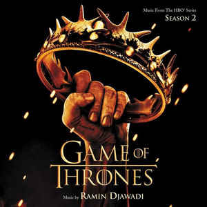
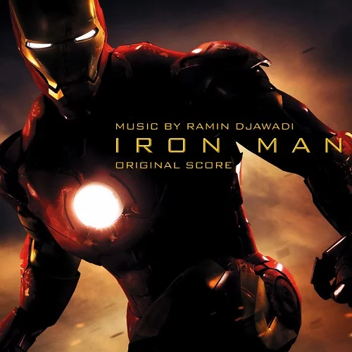
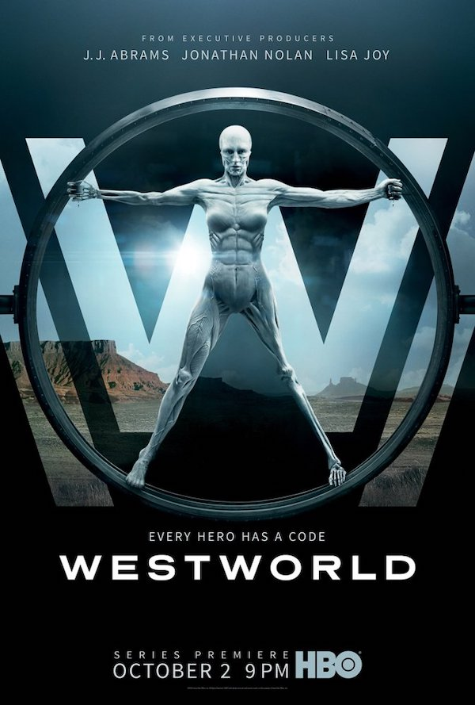

Biographie
Ramin Djawadi est né en 1974 à Duisbourg en Allemagne. Il est compositeur de musique de film. Il travaille seul mais également en tant que compositeur pour musiques additionnelles, orchestrateur et assistant de Hanz Zimmer. Il travaille à Remote Control Production qui est une compagnie gérée par Zimmer lui-même.
Djawadi dans son studio 2019 - Andres Jimenez
Musique
Djawadi est le compositeur principal de sériestel que Game of Thrones, House Of Dragon et Westworld. Il est également connu pour ses travaux pour ses compositions des bandes originales de Pacific Rim et Iron Man. Il se fait connaître à Hollywood dès 2004 avec la musique du film Blade: Trinity. Nommé aux Grammy Awards pour la bande originale d'Iron Man (2008), il excelle dans les films à grand spectacle. Le compositeur ne se contente pas du grand écran, signant également des compositions pour la télévision et même les jeux vidéos.
Games of Thrones - HBO - (2011 - 2019)
Iron Man - Marvel Studios (2008)
Westworld
Westworld est une série crée par Lisa Joy et Jonathan Nolan difusée pour la première fois en 2016 sur la chaîne HBO. Westworld est un parc d'attractions futuriste recréant différents univers, dont l'univers de far west du xix siècle. Il est peuplé d'androïdes réinitialisés à la fin de chaque boucle narrative. Les visiteurs, de riches vacanciers peuvent y faire ce qu'ils veulent sans aucune conséquence. Mais à la suite d'une mise à jour du programme des androïdes, les dirigeants du parc devront faire face à plusieurs bugs dans leur comportement. Ramin Djawadi a crée une nouvelle bande originale et unique pour le générique de chaque saison. D’un autre côté, ce qui se détache d’autres séries est que le public à pu découvrir une bande-son étonnante lors des scènes dans le parc et donc dans un environnement tenant à la fois du passé, du présent et du futur. Djawadi à décidé de revisiter des tubes contemporains en version piano ou en version orchestrale. La bande originale de la première saison s’intilule Main Title Theme - Westword et dure 1:41. C’est un mélange d’instruments symphoniques qui donne cet effet épique et grandiose qui se mélange avec de subtiles sons éléctroniques rappellant l’univers futuriste de Westword ce qui accentue le thème de la série. Un mélange entrainant, puissant et odacieux.